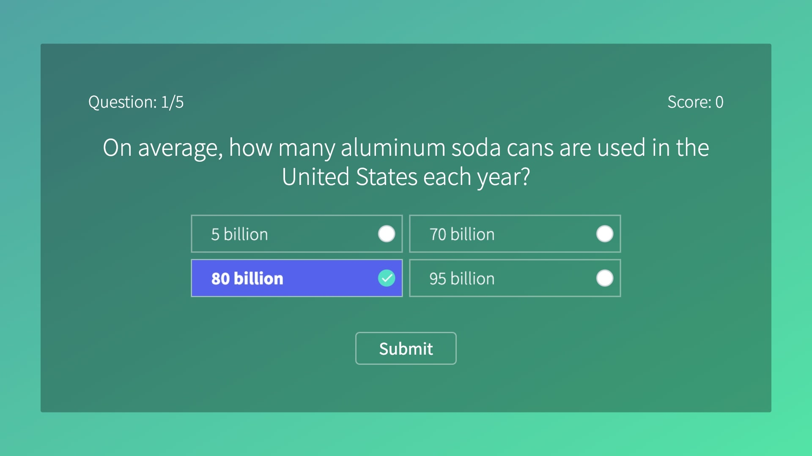
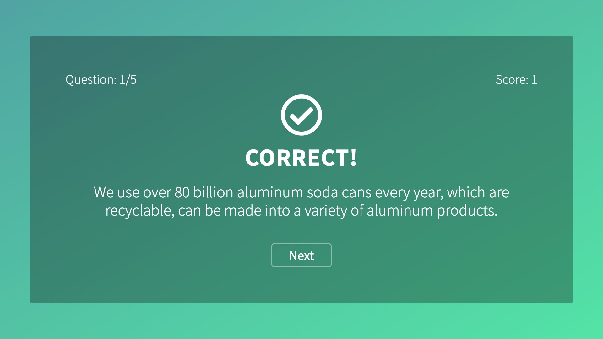
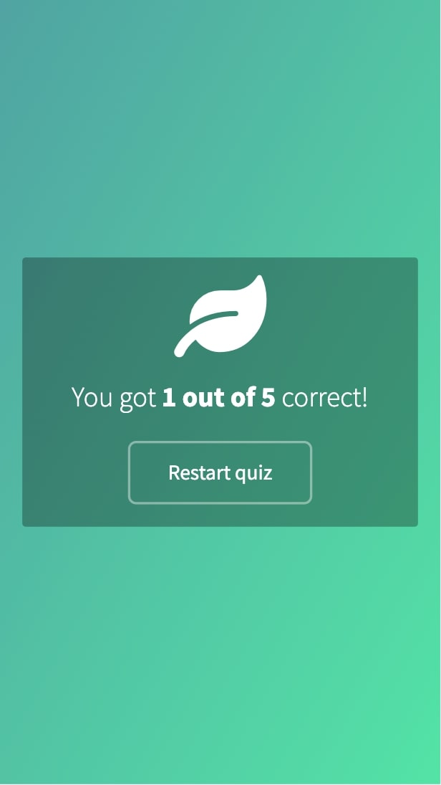

I'm
Ivory Sherman, a front-end developer focused on building beautiful web experiences.
Projects
Think you know how to recycle?
"Think you know how to recycle?" is a quiz that tests the users knowledge about recycling. Users are prompted through a series of questions with textual feedback teaching them about sustainability.
UI/UX experience design, HTML, CSS, and JS



About
Ivory Sherman is a forward-thinking & passionate Front-End Developer who writes semantic code with performance in mind using current technologies. Essentially, she is a rare blend of the creative and the technical. She wants to be involved in projects where she can work with an amazing team, create compelling user-facing applications while also advancing her development career.
HTML, CSS, and Javascript are her languages; 'honor the content always' is her mantra.
👉🏽 Contact
To get in touch, send her an
email or message on
LinkedIn or see what she's building on
Github.